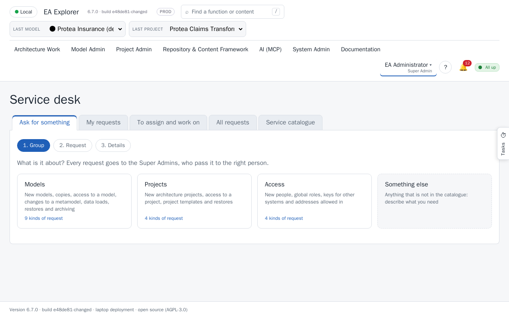

Ask the service desk for something
For: Practising architects
A request to the people who run EA Explorer.

#/service-desk/askWhy do this
The service desk is where you ask for access, report a problem or request a change. A request there is tracked, so nothing is lost in email and you can see where it stands.
EA Explorer covers a lot of ground. A few habits (search, help on every screen, your own requests and pins) make it feel smaller and get you to your work faster.
In TOGAF terms: General use of the tool, across every part of the Architecture Repository. See EA Explorer and the TOGAF Standard.
The goal: The people who run EA Explorer know what you need.
Steps
- Open Home › Service desk › Ask for something.
- Say what you need; add a file if it helps.
- Send; follow it in My requests.